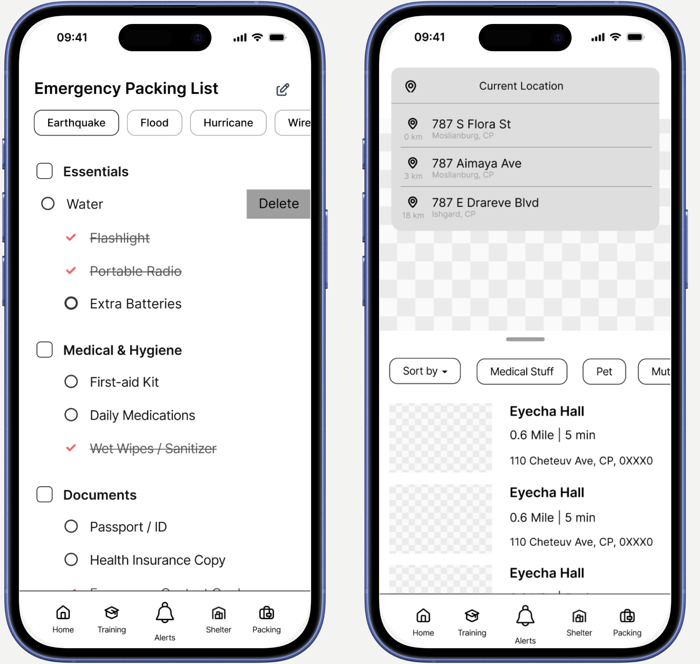

Interaction Design 3 — Spring 2025
KnowNow
When time matters, language shouldn't be a barrier. A mobile app designed to help non-English speaking communities access emergency alerts, shelter information, and evacuation guidance in their native language.
Emergency alerts were built for English speakers
During the 2025 LA wildfires, over 12,000 of 50,000 Asian residents in four evacuation zones needed language assistance — yet alerts arrived in English and Spanish only. For non-English speaking communities, a language barrier in an emergency isn't an inconvenience. It's a life-safety failure.

Secondary research findings — language gaps in emergency infrastructure
We went to where the crisis actually was
We visited an active Red Cross emergency shelter, recruited participants through social media and physical posters in the community, and reached out via text to first responders, bilingual volunteers, and emergency workers across LA. What we found shaped everything.

Field visit — Red Cross emergency shelter, Los Angeles, January 2025
12,000 of 50,000 Asian residents in the evacuation zones needed language assistance — alerts came only in English and Spanish.
"Most of the alerts came through our phones eventually, but they were in English, and understanding them was hard for me... I ended up calling a friend from the cultural association to help translate."
— HUA LI6,387 non-English speaking residents in the Eaton Fire struggled to verify information accuracy due to language barriers.
"I didn't get any official information right away... when I do watch TV, it's usually in Spanish because my English is still hard for me sometimes."
— MARIA LOPEZ (synthetic user)26.6% of California's population are LEP. Most LA fire alerts were purely in English text.
"Everything seemed designed for people who already had more resources or who spoke the language perfectly."
— MARIA LOPEZ (synthetic user)The most vulnerable user: a recent immigrant
Our user type matrix mapped four user types across two axes — English proficiency and disaster readiness. We focused on the highest-risk quadrant: limited English, no disaster training. That led us to Li Xiao.

User type matrix — English proficiency × disaster readiness
Arrived 4 months ago on a family reunification visa
Low-income household, small apartment in LA's Cantonese community
No prior wildfire or earthquake experience
Getting reliable help without fear
Keeping his family safe
Learning how to prepare before the next disaster
Li Xiao gets an English-only wildfire alert at work. His wife texts him in panic from their apartment — she can see smoke. He can't tell if they need to evacuate. He opens KnowNow, which translates the alert into Cantonese, shows fire zones visually, and sends his wife a simple message in Cantonese: "Start getting ready, pack important items."

Storyboard — Li Xiao receives the alert
Paper to pixels, shaped by testing
We started with a paper prototype and tested it with 4 participants — product design students and a faculty member. Three key findings from testing directly drove our revisions into a low-fidelity digital prototype.

Paper prototype — language selection, alerts, shelter map, packing list
Low-fidelity prototype
Based on these findings, we moved into a low-fidelity digital prototype with three targeted revisions.

What we'd still want to know
KnowNow reached paper prototype stage. The process surfaced questions we didn't get to answer — and that feels like the honest place to end.